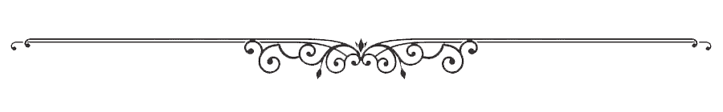
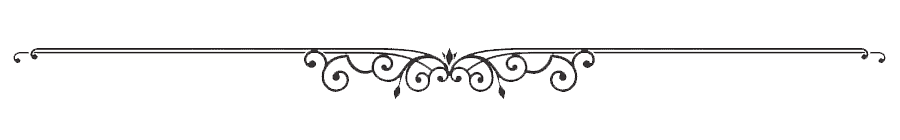

Благословення від Єгови — воно збагачує і болю з собою не приносить.
Прислів'я 10:22
 

В нас звісно іще не Гілеад,
та вручаємо вам квиток-сертифікат.
Школу піонерів ви пройшли,
нових знань багато ви знайшли!
А як підете в збори ви назад,
то нема уже для вас завад.
Служіть ви щиро, радість вас переповняє.
Нехай ніколи ревний дух не покидає!
Ви прикладом усім хорошим будьте,
а негаразди всякі геть забудьте.
Наш Бог гордиться вами - памʼятайте!
І добру звістку всім розповідайте.
А якщо сумно стане вам на мить -
квиток оцей мерщій у руки ви беріть.
І спогади приємні як нахлинуть -
думки погані, наче мухи згинуть 😊
Води майже живої ще візьміть.
Як спрага мучитиме - ви ковток зробіть.
А пляшечка ця вам нагадає,
який вас склад всередині наповняє.
Ви повні радості, рішучості і віри,
любові, терпеливості й надії!
Все це вміщається у кожному із піонерів -
Сміливих людях, які стукають у двері!
Ми тішимося з вами цим навчанням,
бажаємо не зупинятись в добрих починаннях.
Єгова Бог усіх вас підкріпляє,
а збір весь щиро вас сьогодні тут вітає!
І як до дому ви прийдете - знання своє і іншим принесете,
то трошки перепаде й нам - вашим щирим
співпрацівникам!